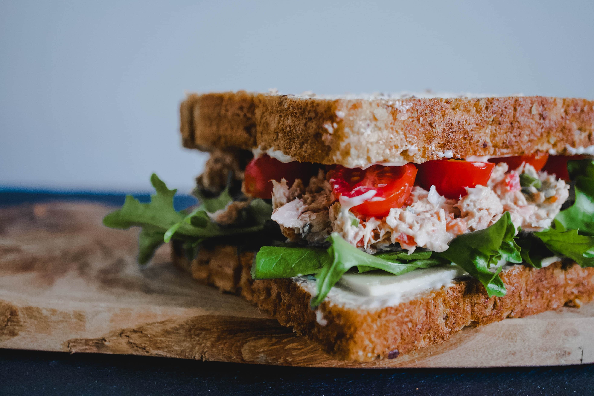
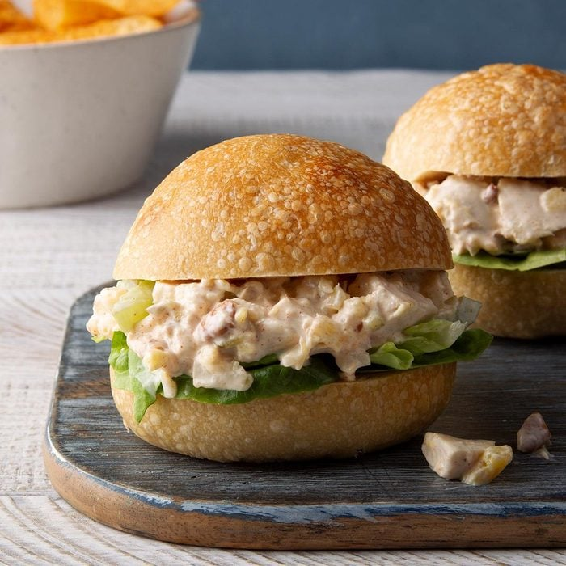
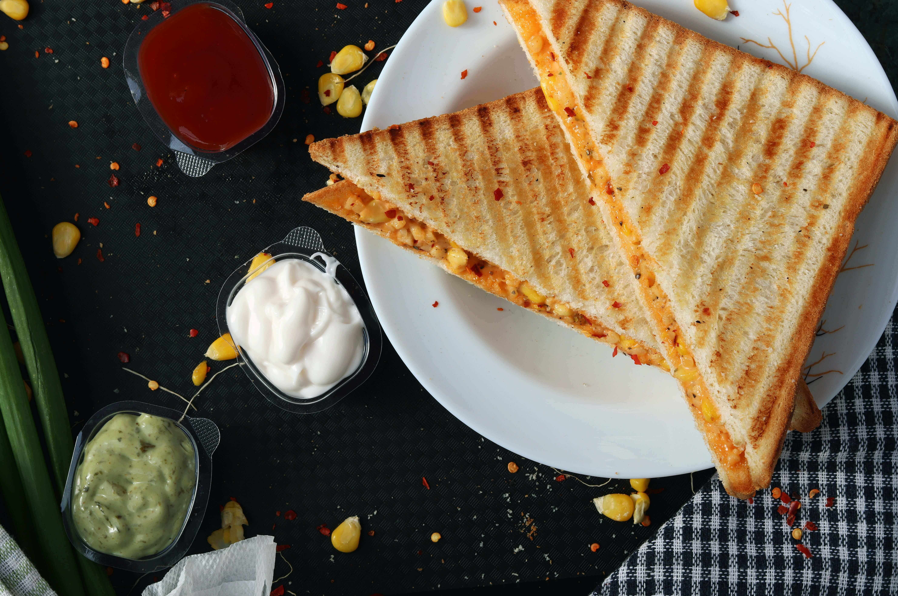

You might have an early morning shift, or just woke up late and have to rush to work, or stay far from your workplace. Either way, your breakfast gets compromised. You wake up and just grab a protein bar because you don’t have the time to make breakfast. Well, that’s a matter of the past now. We have the best, heartiest sandwhich recipes that are not only easy but quick to make too. Say hello to breakfast every day now.

Pineapple Chicken Salad sandwhiches Recipe photo by Taste of Home
If you don’t want to start your day with regular salad, this sandwhich recipe is a great way to amp it up. Add in some pineapples to this sandwhich to make it stand out and start your day on a great note.
2 cups cubed cooked chicken breast
1/2 cup crushed pineapple, drained
1/4 cup chopped pecans
1/4 cup chopped celery
2 tablespoons finely chopped onion
2 tablespoons sweet pickle relish
1/2 cup mayonnaise
1/4 teaspoon onion salt
1/4 teaspoon garlic salt
1/4 teaspoon paprika
6 lettuce leaves
6 sandwhich rolls, split
In a medium bowl, combine the first 6 ingredients. In a small bowl, combine the mayonnaise, onion salt, garlic salt and paprika; add to chicken mixture and mix well. Serve on lettuce-lined rolls.
1 sandwhich: 433 calories, 22g fat (3g saturated fat), 43mg cholesterol, 637mg sodium, 38g carbohydrate (9g sugars, 2g fiber), 20g protein.

A classic, this is as hearty as a sandwhich can get. Use any bread for this sandwhich recipe, it’s going to turn out amazing. Quick, easy and tasty, this sandwhich will make sure you never go without your breakfast.
4 slices white bread
3 tablespoons butter (divided)
2 slices Cheddar cheese
Preheat a skillet over medium heat.
Slather one side of a slice of bread with butter. Place the bread butter-side-down in the skillet and add one slice of cheese.
Butter another slice of bread and place it butter-side-up onto your sandwhich.
Grill the sandwhich until it’s lightly browned on one side and then flip. Continue grilling until both sides are browned and the cheese is melted.
Repeat with the remaining ingredients for a second sandwhich.
Slice in half, serve, and enjoy!
400 kcal
The haven for carb lovers, if you aren’t watching your diet, this is a great sandwhich to start your day with. If mashed potato is your comfort food, this sandwhich will become your favourite in no time. Feel free to customise this sandwhich recipe to suit your taste.
Spicy Aloo sandwhich is an easy yet extremely flavourful dish which can be served either as breakfast or as an evening snack. This Indian inspired Aloo masala sandwhich with a lovely touch of cheese is surely gonna blow your mind. Best served with some fried and ketchup by the side.
Oil- 1 Tbsp
Cumin Seeds - 1/2 Tsp
Onion - 2 Nos Chopped
A Piece Of Ginger Chopped
Green Chilli - 3 Nos Chopped
Turmeric Powder - 1/2 Tsp
Chilli Powder - 2 Tsp
Cumin Powder - 1 Tsp
Salt - 1 Tsp
Chaat Masala Powder - 1/2 Tsp
Garam Masala - 1/2 Tsp
Boiled Potato - 5 Nos
Cooked Peas - 1/2 Cup
Chopped Coriander Leaves
Juice Of 1 Lemon
Bread
Mint Coriander Chutney
Tomato Ketchup
Cheese Slice
Aloo Masala
Grated Cheese
Butter
Add oil to a pan and roast cumin seeds in it.
To this, add onion, ginger, green chilies and saute until the onions turn transparent.
Now add turmeric powder, chilli powder, cumin powder, salt, chaat masala powder, garam masala powder and mix everything
Saute this mixture for 1 minute and then add boiled, peeled and roughly cut potatoes.
Mix everything once and then mash the potatoes roughly.
To the mashed mixture, add cooked green peas, coriander leaves and lemon juice.
Give it all a quick mix. Turn off the stove and cool the mixture completely.
Aloo masala is ready so keep it aside.
Take 2 slices of sandwhich bread and on one side of one bread slice, spread some mint coriander chutney and tomato ketchup onto the other slice.
On the slice with mint chutney, place a cheese slice.
Over it, place the aloo masala and gently spread all across the bread slice.
Now, generously grate some cheese on top of aloo masala and close it with the other bread slice which has tomato ketchup on inner side.
Gently press the sandwhich to secure it.
Spread some butter on a sandwhich grill and place the prepare raw sandwhich on it.
Smear some butter on the top most layer of bread and flip it to the bottom to make sure the bread is toasted evenly on both sides.
Keep the flame on medium and grill the sandwhich on both sides.
That's it. Spicy Aloo sandwhich is ready to be served.
Cut it diagonally or half and serve hot with some fries by the side.
There’s egg sandwhich and there’s this Calcutta egg sandwhich. If you like your sandwhich fuss-free and well-seasoned, this is your go-to breakfast sandwhich. You can prepare it under 12 minutes, and makes for a delicious protein-packed meal on-the-go.
2 pieces eggs (boiled and peeled)
30 g butter (softened)
¼ tsp pepper (freshly crushed)
2 g salt
6 slices bread
Divide the softened butter into small cubes and transfer to a mixing bowl.
Using a whisk, cream the butter thoroughly until it changes color to a pale yellow. This will incorporate air into the butter, making the sandwhiches light and fluffy.
Chop up the boiled eggs into fine pieces, and add them to the butter.
Add in the salt and pepper. The latter is the only flavouring used in this recipe. So make sure that the pepper is freshly ground.
Mix all the ingredients together till the butter and egg yolks combine to form a creamy spread.
Take 50 g of this filling spread it evenly between two slices of bread.
Trim the edges, cut diagonally into triangles, and the sandwhiches are ready to eat!
Photography retrieved from Unsplash
Content and videos retrieved from Lifestyle Asia, TasteofHome, Insanely Good Recipes, HomeCookingShow(YouTube) and Bong Eats